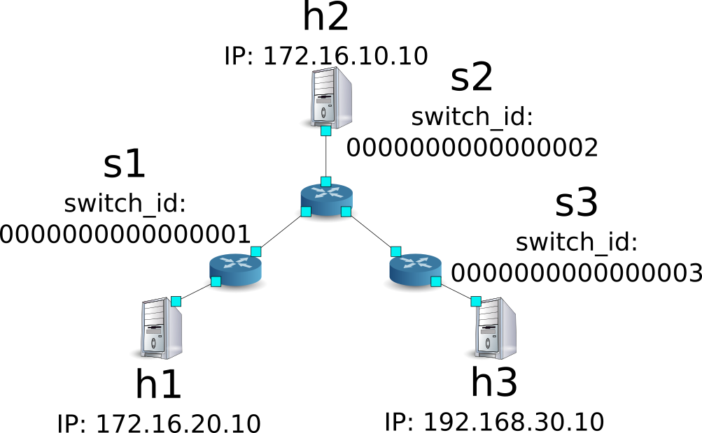
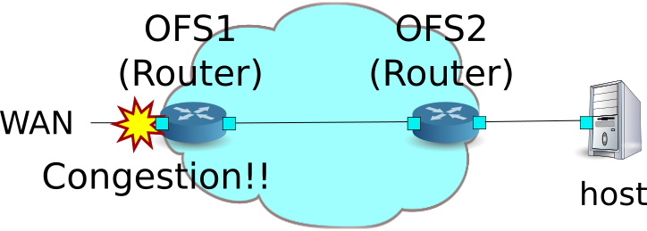
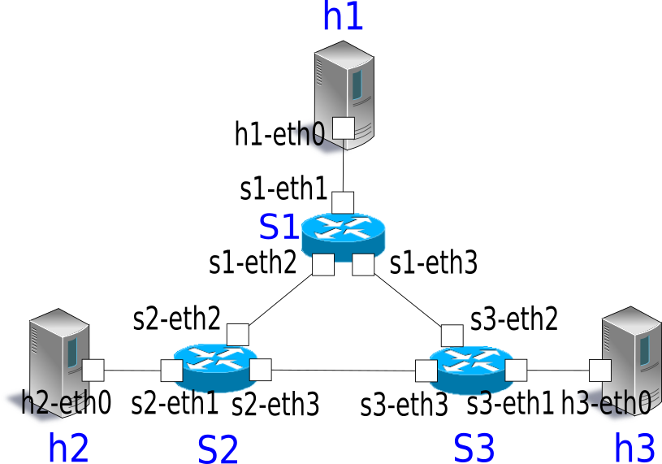
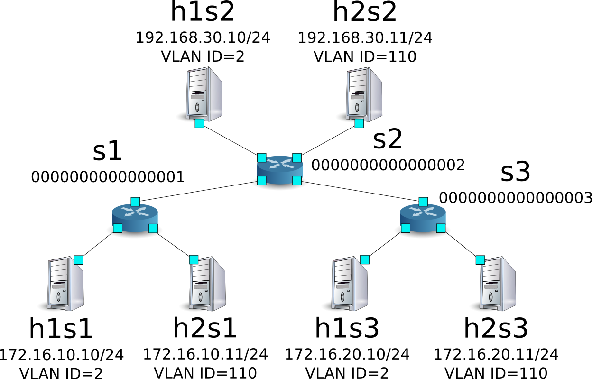
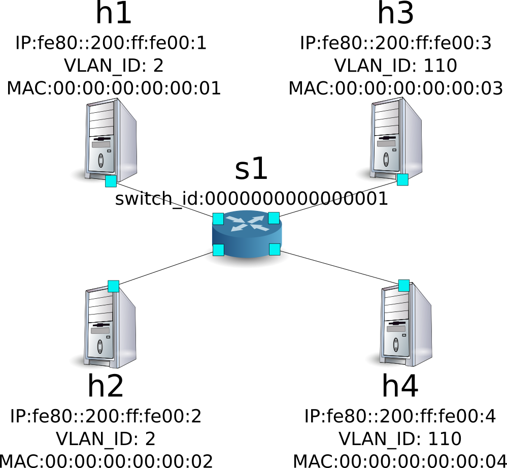
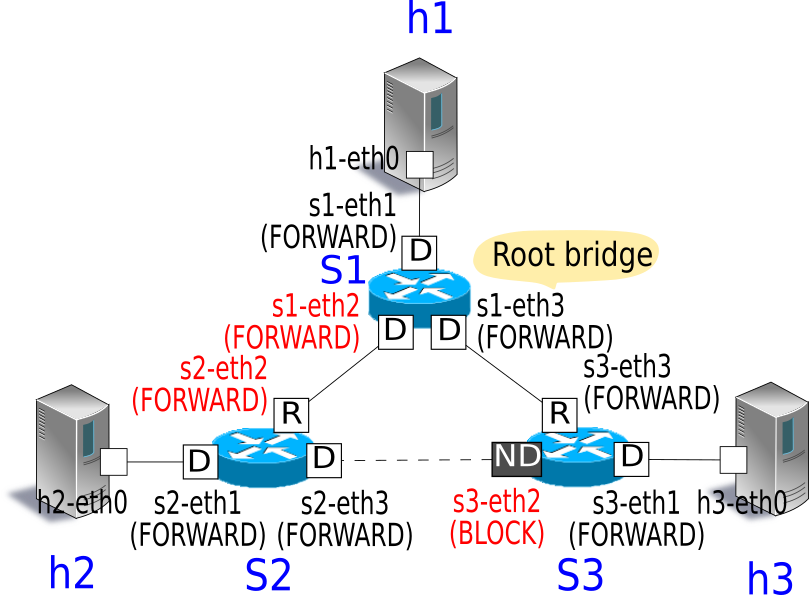
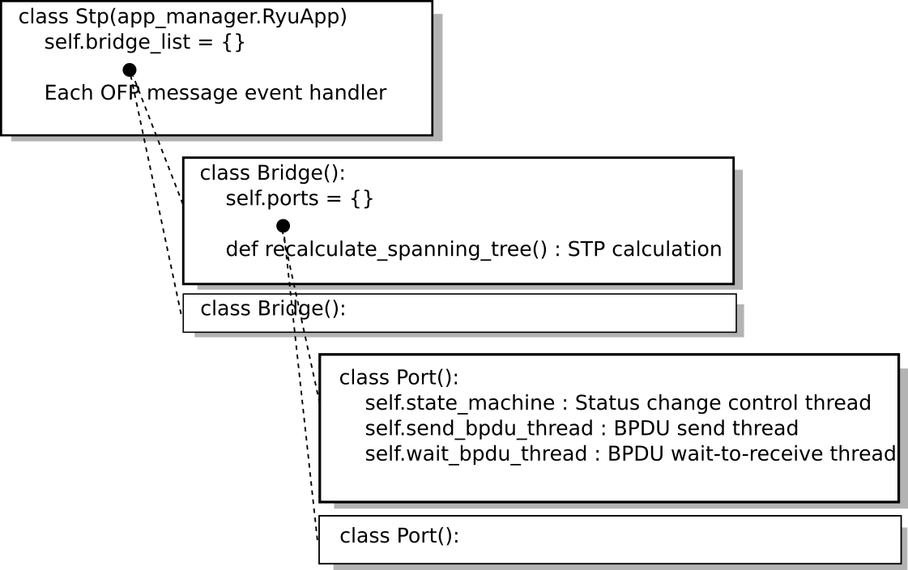

스패닝 트리¶
이 장에서는 Ryu를 이용한 스패닝 트리의 구현 방법을 설명하고 있습니다.
스패닝 트리¶
스패닝 트리 루프 구조를 가지는 네트워크의 브로드 캐스트 스톰 의 발생을 억제하는 기능입니다. 또한 루프를 방지한다는 본래의 기능을 응용하여 네트워크 고장이 발생했을 때 자동으로 경로를 전환 네트워크 중복 보장의 수단으로도 이용됩니다.
스패닝 트리에는 STP, RSTP, PVST + MSTP 등 여러가지 종류가 있습니다 만, 이 장에서는 가장 기본적인 STP 구현을 살펴 보겠습니다.
STP (spanning tree protocol : IEEE 802.1D) 네트워크를 논리적 트리로 취급하고, 각 스위치 (장에서는 브리지이라고 부를 수 있습니다) 포트를 프레임 전송 가능 또는 불가능 상태로 설정하는 것으로, 루프 구조를 가진 네트워크에서 브로드 캐스트 폭풍의 발생을 억제합니다.
{kind=link}
STP는 브리지간에 BPDU (Bridge Protocol Data Unit) 패킷을 상호 교환 하고 브리지와 포트 정보를 비교 함으로서, 각 포트의 프레임 전송 여부를 결정합니다.
구체적으로는 다음과 같은 순서에 의해 실현됩니다.
1．루트 브리지의 선출
브리지 사이의 BPDU 패킷 교환을 통해 최소의 브리지 ID를 갖는 브리지 루트 브리지로 선출됩니다. 이후는 루트 브리지 만 원래 BPDU 패킷을 전송하고 다른 브리지가 루트 브리지에서 수신 한 BPDU 패킷 를 전송합니다.
주석
브리지 ID는 각 브리지에 설정된 브리지 priority 와 특정 포트의 MAC 주소의 조합으로 산출됩니다.
브리지 ID
상위2byte 하위6byte 브리지priority MAC주소
2．포트의 역할 결정
각 포트의 루트 브리지까지의 비용을 바탕으로, 포트의 역할을 결정합니다.
루트 포트 (Root port)
브리지에서 가장 루트 브리지까지의 비용이 작은 포트. 루트 브리지에서 BPDU 패킷을 수신하는 포트입니다.
지정 포트 (Designated port)
각 링크의 루트 브리지까지의 비용이 작은 쪽의 포트. 루트 브리지로부터받은 BPDU 패킷을 전송하는 포트입니다. 루트 브리지의 포트는 모두 지정된 포트입니다.
비지정 포트 (Non designated port)
루트 포트 지정 포트 이외의 포트. 프레임 전송을 억제하는 포트입니다.
{kind=link}
주석
루트 브리지까지의 비용은 각 포트에서 수신 한 BPDU 패킷 설정에서 다음과 같이 비교됩니다.
우선1：root path cost 값의 비교
각 브리지는 BPDU 패킷을 전송할 때 출력 포트에 설정된 path cost 값을 BPDU 패킷의 root path cost 값에 더합니다. 이렇게하면 root path cost 값은 루트 브리지에 도달 할 때까지 통해 각 링크의 path cost 값의 합계입니다.우선2：root path cost 값이 같으면 대향 브리지의 브리지 ID별로 비교.
우선3：대향 브리지의 브리지 ID가 같은 경우 (각 포트가 동일한 브리지에 연결된 케이스), 대향 포트의 포트 ID별로 비교.
포트 ID
상위2byte 하위2byte 포트 priority 포트 번호
3．포트의 상태 전이
포트 역할 결정 후 (STP 계산의 완료시) 각 포트는 LISTEN 상태입니다. 그런 다음에 나타내는 상태 전환을 실시해, 최종적으로 각 포트의 역할에 따라 FORWARD 상태 또는 BLOCK 상태로 전환합니다. 구성에서 사용할 포트 및 설정 된 포트는 DISABLE 상태가되고, 이후 상태 전환되지 않습니다.

각 포트는 상태에 따라 프레임 전송 여부 등의 동작을 결정합니다.
| 상태 | 동작 |
|---|---|
| DISABLE | 잘못된 포트. 모든 수신 패킷을 무시합니다. |
| BLOCK | BPDU 수신을 풉니다. |
| LISTEN | BPDU 송수신 합니다. |
| LEARN | BPDU 송수신 / MAC 학습을 실시합니다. |
| FORWARD | BPDU 송수신 / MAC 학습 / 프레임을 전송합니다. |
이러한 작업이 각 브리지에서 실행되는 것으로, 프레임 전송하는 포트와 프레임 전송을 억제하는 포트를 결정하고 네트워크의 루프가 해소됩니다.
또한 링크 다운 및 BPDU 패킷 max age (기본 20 초) 사이의 미수신 에 의한 고장 감지 또는 포트의 추가 등에 의해 네트워크 토폴로지 변경 내용 발견 한 경우 각 브리지에서 위의 1. 2. 3.을 실행 트리의 재구성 됩니다 (STP 재 계산).
Ryu 응용 프로그램의 실행¶
스패닝 트리 기능을 OpenFlow를 이용하여 실현 한 Ryu 스패닝 트리 응용 프로그램을 실행 해 봅니다.
Ryu 소스 트리에 포함되어있는 simple_switch_stp.py는 OpenFlow 1.0 전용 응용 프로그램이기 때문에 여기에서는 새롭게 OpenFlow 1.3에 대응 한 simple_switch_stp_13.py을 만들합니다. 이 프로그램은 「 스위칭 허브 」스패닝 트리 기능을 추가 한 응용 프로그램입니다.
소스 이름： simple_switch_stp_13.py
from ryu.base import app_manager
from ryu.controller import ofp_event
from ryu.controller.handler import CONFIG_DISPATCHER, MAIN_DISPATCHER
from ryu.controller.handler import set_ev_cls
from ryu.ofproto import ofproto_v1_3
from ryu.lib import dpid as dpid_lib
from ryu.lib import stplib
from ryu.lib.packet import packet
from ryu.lib.packet import ethernet
class SimpleSwitch13(app_manager.RyuApp):
OFP_VERSIONS = [ofproto_v1_3.OFP_VERSION]
_CONTEXTS = {'stplib': stplib.Stp}
def __init__(self, *args, **kwargs):
super(SimpleSwitch13, self).__init__(*args, **kwargs)
self.mac_to_port = {}
self.stp = kwargs['stplib']
# Sample of stplib config.
# please refer to stplib.Stp.set_config() for details.
config = {dpid_lib.str_to_dpid('0000000000000001'):
{'bridge': {'priority': 0x8000}},
dpid_lib.str_to_dpid('0000000000000002'):
{'bridge': {'priority': 0x9000}},
dpid_lib.str_to_dpid('0000000000000003'):
{'bridge': {'priority': 0xa000}}}
self.stp.set_config(config)
@set_ev_cls(ofp_event.EventOFPSwitchFeatures, CONFIG_DISPATCHER)
def switch_features_handler(self, ev):
datapath = ev.msg.datapath
ofproto = datapath.ofproto
parser = datapath.ofproto_parser
# install table-miss flow entry
#
# We specify NO BUFFER to max_len of the output action due to
# OVS bug. At this moment, if we specify a lesser number, e.g.,
# 128, OVS will send Packet-In with invalid buffer_id and
# truncated packet data. In that case, we cannot output packets
# correctly.
match = parser.OFPMatch()
actions = [parser.OFPActionOutput(ofproto.OFPP_CONTROLLER,
ofproto.OFPCML_NO_BUFFER)]
self.add_flow(datapath, 0, match, actions)
def add_flow(self, datapath, priority, match, actions):
ofproto = datapath.ofproto
parser = datapath.ofproto_parser
inst = [parser.OFPInstructionActions(ofproto.OFPIT_APPLY_ACTIONS,
actions)]
mod = parser.OFPFlowMod(datapath=datapath, priority=priority,
match=match, instructions=inst)
datapath.send_msg(mod)
def delete_flow(self, datapath):
ofproto = datapath.ofproto
parser = datapath.ofproto_parser
for dst in self.mac_to_port[datapath.id].keys():
match = parser.OFPMatch(eth_dst=dst)
mod = parser.OFPFlowMod(
datapath, command=ofproto.OFPFC_DELETE,
out_port=ofproto.OFPP_ANY, out_group=ofproto.OFPG_ANY,
priority=1, match=match)
datapath.send_msg(mod)
@set_ev_cls(stplib.EventPacketIn, MAIN_DISPATCHER)
def _packet_in_handler(self, ev):
msg = ev.msg
datapath = msg.datapath
ofproto = datapath.ofproto
parser = datapath.ofproto_parser
in_port = msg.match['in_port']
pkt = packet.Packet(msg.data)
eth = pkt.get_protocols(ethernet.ethernet)[0]
dst = eth.dst
src = eth.src
dpid = datapath.id
self.mac_to_port.setdefault(dpid, {})
self.logger.info("packet in %s %s %s %s", dpid, src, dst, in_port)
# learn a mac address to avoid FLOOD next time.
self.mac_to_port[dpid][src] = in_port
if dst in self.mac_to_port[dpid]:
out_port = self.mac_to_port[dpid][dst]
else:
out_port = ofproto.OFPP_FLOOD
actions = [parser.OFPActionOutput(out_port)]
# install a flow to avoid packet_in next time
if out_port != ofproto.OFPP_FLOOD:
match = parser.OFPMatch(in_port=in_port, eth_dst=dst)
self.add_flow(datapath, 1, match, actions)
data = None
if msg.buffer_id == ofproto.OFP_NO_BUFFER:
data = msg.data
out = parser.OFPPacketOut(datapath=datapath, buffer_id=msg.buffer_id,
in_port=in_port, actions=actions, data=data)
datapath.send_msg(out)
@set_ev_cls(stplib.EventTopologyChange, MAIN_DISPATCHER)
def _topology_change_handler(self, ev):
dp = ev.dp
dpid_str = dpid_lib.dpid_to_str(dp.id)
msg = 'Receive topology change event. Flush MAC table.'
self.logger.debug("[dpid=%s] %s", dpid_str, msg)
if dp.id in self.mac_to_port:
self.delete_flow(dp)
del self.mac_to_port[dp.id]
@set_ev_cls(stplib.EventPortStateChange, MAIN_DISPATCHER)
def _port_state_change_handler(self, ev):
dpid_str = dpid_lib.dpid_to_str(ev.dp.id)
of_state = {stplib.PORT_STATE_DISABLE: 'DISABLE',
stplib.PORT_STATE_BLOCK: 'BLOCK',
stplib.PORT_STATE_LISTEN: 'LISTEN',
stplib.PORT_STATE_LEARN: 'LEARN',
stplib.PORT_STATE_FORWARD: 'FORWARD'}
self.logger.debug("[dpid=%s][port=%d] state=%s",
dpid_str, ev.port_no, of_state[ev.port_state])
실험 환경 구축¶
스패닝 트리 응용 프로그램의 동작 확인을 할 실험 환경을 구축합니다.
VM 이미지 사용을위한 환경 설정 및 로그인 방법 등은 「 스위칭 허브 」 을 참조하십시오.
루프 구조를 가지는 특수한 위상으로 작동시키기 위해 「 링크 어그리게이션 」 뿐만 아니라 토폴로지 구축 스크립트는 mininet 환경을 구축합니다.
소스 이름： spanning_tree.py
#!/usr/bin/env python
from mininet.cli import CLI
from mininet.link import Link
from mininet.net import Mininet
from mininet.node import RemoteController
from mininet.term import makeTerm
if '__main__' == __name__:
net = Mininet(controller=RemoteController)
c0 = net.addController('c0')
s1 = net.addSwitch('s1')
s2 = net.addSwitch('s2')
s3 = net.addSwitch('s3')
h1 = net.addHost('h1')
h2 = net.addHost('h2')
h3 = net.addHost('h3')
Link(s1, h1)
Link(s2, h2)
Link(s3, h3)
Link(s1, s2)
Link(s2, s3)
Link(s3, s1)
net.build()
c0.start()
s1.start([c0])
s2.start([c0])
s3.start([c0])
net.terms.append(makeTerm(c0))
net.terms.append(makeTerm(s1))
net.terms.append(makeTerm(s2))
net.terms.append(makeTerm(s3))
net.terms.append(makeTerm(h1))
net.terms.append(makeTerm(h2))
net.terms.append(makeTerm(h3))
CLI(net)
net.stop()
VM 환경에서이 프로그램을 실행하면 스위치 s1, s2, s3 사이에서 루프가 존재하는 토폴로지가 됩니다.
{kind=link}
net 명령의 실행 결과는 다음과 같습니다.
ryu@ryu-vm:~$ sudo ./spanning_tree.py
Unable to contact the remote controller at 127.0.0.1:6633
mininet> net
c0
s1 lo: s1-eth1:h1-eth0 s1-eth2:s2-eth2 s1-eth3:s3-eth3
s2 lo: s2-eth1:h2-eth0 s2-eth2:s1-eth2 s2-eth3:s3-eth2
s3 lo: s3-eth1:h3-eth0 s3-eth2:s2-eth3 s3-eth3:s1-eth3
h1 h1-eth0:s1-eth1
h2 h2-eth0:s2-eth1
h3 h3-eth0:s3-eth1
OpenFlow 버전 설정¶
사용하는 OpenFlow 버전을 1.3으로 설정합니다. 이 명령 입력 스위치 s1, s2, s3의 xterm에서 실시해주세요.
Node: s1:
root@ryu-vm:~# ovs-vsctl set Bridge s1 protocols=OpenFlow13
Node: s2:
root@ryu-vm:~# ovs-vsctl set Bridge s2 protocols=OpenFlow13
Node: s3:
root@ryu-vm:~# ovs-vsctl set Bridge s3 protocols=OpenFlow13
스위칭 허브의 실행¶
준비 하였으므로 Ryu 응용 프로그램을 실행합니다. 윈도우 제목이 「Node: c0 (root)」이다 xterm에서 다음 명령을 실행합니다.
Node: c0:
root@ryu-vm:~$ ryu-manager ./simple_switch_stp_13.py
loading app simple_switch_stp_13.py
loading app ryu.controller.ofp_handler
loading app ryu.controller.ofp_handler
instantiating app None of Stp
creating context stplib
instantiating app simple_switch_stp_13.py of SimpleSwitch13
instantiating app ryu.controller.ofp_handler of OFPHandler
OpenFlow 스위치 시작 STP 계산¶
각 OpenFlow 스위치와 컨트롤러의 연결이 완료되면 BPDU 패킷의 교환이 시작 루트 브리지 선출 포트 역할 설정 포트 상태 천이가 이루어집니다.
[STP][INFO] dpid=0000000000000001: Join as stp bridge.
[STP][INFO] dpid=0000000000000001: [port=1] DESIGNATED_PORT / LISTEN
[STP][INFO] dpid=0000000000000001: [port=2] DESIGNATED_PORT / LISTEN
[STP][INFO] dpid=0000000000000001: [port=3] DESIGNATED_PORT / LISTEN
[STP][INFO] dpid=0000000000000002: Join as stp bridge.
[STP][INFO] dpid=0000000000000002: [port=1] DESIGNATED_PORT / LISTEN
[STP][INFO] dpid=0000000000000002: [port=2] DESIGNATED_PORT / LISTEN
[STP][INFO] dpid=0000000000000002: [port=3] DESIGNATED_PORT / LISTEN
[STP][INFO] dpid=0000000000000001: [port=2] Receive superior BPDU.
[STP][INFO] dpid=0000000000000001: [port=1] DESIGNATED_PORT / BLOCK
[STP][INFO] dpid=0000000000000001: [port=2] DESIGNATED_PORT / BLOCK
[STP][INFO] dpid=0000000000000001: [port=3] DESIGNATED_PORT / BLOCK
[STP][INFO] dpid=0000000000000001: Root bridge.
[STP][INFO] dpid=0000000000000001: [port=1] DESIGNATED_PORT / LISTEN
[STP][INFO] dpid=0000000000000001: [port=2] DESIGNATED_PORT / LISTEN
[STP][INFO] dpid=0000000000000001: [port=3] DESIGNATED_PORT / LISTEN
[STP][INFO] dpid=0000000000000002: [port=2] Receive superior BPDU.
[STP][INFO] dpid=0000000000000002: [port=1] DESIGNATED_PORT / BLOCK
[STP][INFO] dpid=0000000000000002: [port=2] DESIGNATED_PORT / BLOCK
[STP][INFO] dpid=0000000000000002: [port=3] DESIGNATED_PORT / BLOCK
[STP][INFO] dpid=0000000000000002: Non root bridge.
[STP][INFO] dpid=0000000000000002: [port=1] DESIGNATED_PORT / LISTEN
[STP][INFO] dpid=0000000000000002: [port=2] ROOT_PORT / LISTEN
[STP][INFO] dpid=0000000000000002: [port=3] DESIGNATED_PORT / LISTEN
[STP][INFO] dpid=0000000000000003: Join as stp bridge.
[STP][INFO] dpid=0000000000000003: [port=1] DESIGNATED_PORT / LISTEN
[STP][INFO] dpid=0000000000000003: [port=2] DESIGNATED_PORT / LISTEN
[STP][INFO] dpid=0000000000000003: [port=3] DESIGNATED_PORT / LISTEN
[STP][INFO] dpid=0000000000000002: [port=3] Receive superior BPDU.
[STP][INFO] dpid=0000000000000002: [port=1] DESIGNATED_PORT / BLOCK
[STP][INFO] dpid=0000000000000002: [port=2] DESIGNATED_PORT / BLOCK
[STP][INFO] dpid=0000000000000002: [port=3] DESIGNATED_PORT / BLOCK
[STP][INFO] dpid=0000000000000002: Non root bridge.
[STP][INFO] dpid=0000000000000002: [port=1] DESIGNATED_PORT / LISTEN
[STP][INFO] dpid=0000000000000002: [port=2] ROOT_PORT / LISTEN
[STP][INFO] dpid=0000000000000002: [port=3] DESIGNATED_PORT / LISTEN
[STP][INFO] dpid=0000000000000001: [port=3] Receive superior BPDU.
[STP][INFO] dpid=0000000000000001: [port=1] DESIGNATED_PORT / BLOCK
[STP][INFO] dpid=0000000000000001: [port=2] DESIGNATED_PORT / BLOCK
[STP][INFO] dpid=0000000000000001: [port=3] DESIGNATED_PORT / BLOCK
[STP][INFO] dpid=0000000000000001: Root bridge.
[STP][INFO] dpid=0000000000000001: [port=1] DESIGNATED_PORT / LISTEN
[STP][INFO] dpid=0000000000000001: [port=2] DESIGNATED_PORT / LISTEN
[STP][INFO] dpid=0000000000000001: [port=3] DESIGNATED_PORT / LISTEN
[STP][INFO] dpid=0000000000000003: [port=2] Receive superior BPDU.
[STP][INFO] dpid=0000000000000003: [port=1] DESIGNATED_PORT / BLOCK
[STP][INFO] dpid=0000000000000003: [port=2] DESIGNATED_PORT / BLOCK
[STP][INFO] dpid=0000000000000003: [port=3] DESIGNATED_PORT / BLOCK
[STP][INFO] dpid=0000000000000003: Non root bridge.
[STP][INFO] dpid=0000000000000003: [port=1] DESIGNATED_PORT / LISTEN
[STP][INFO] dpid=0000000000000003: [port=2] ROOT_PORT / LISTEN
[STP][INFO] dpid=0000000000000003: [port=3] DESIGNATED_PORT / LISTEN
[STP][INFO] dpid=0000000000000003: [port=3] Receive superior BPDU.
[STP][INFO] dpid=0000000000000003: [port=1] DESIGNATED_PORT / BLOCK
[STP][INFO] dpid=0000000000000003: [port=2] DESIGNATED_PORT / BLOCK
[STP][INFO] dpid=0000000000000003: [port=3] DESIGNATED_PORT / BLOCK
[STP][INFO] dpid=0000000000000003: Non root bridge.
[STP][INFO] dpid=0000000000000003: [port=1] DESIGNATED_PORT / LISTEN
[STP][INFO] dpid=0000000000000003: [port=2] NON_DESIGNATED_PORT / LISTEN
[STP][INFO] dpid=0000000000000003: [port=3] ROOT_PORT / LISTEN
[STP][INFO] dpid=0000000000000001: [port=3] Receive superior BPDU.
[STP][INFO] dpid=0000000000000001: [port=1] DESIGNATED_PORT / BLOCK
[STP][INFO] dpid=0000000000000001: [port=2] DESIGNATED_PORT / BLOCK
[STP][INFO] dpid=0000000000000001: [port=3] DESIGNATED_PORT / BLOCK
[STP][INFO] dpid=0000000000000001: Root bridge.
[STP][INFO] dpid=0000000000000001: [port=1] DESIGNATED_PORT / LISTEN
[STP][INFO] dpid=0000000000000001: [port=2] DESIGNATED_PORT / LISTEN
[STP][INFO] dpid=0000000000000001: [port=3] DESIGNATED_PORT / LISTEN
[STP][INFO] dpid=0000000000000002: [port=1] DESIGNATED_PORT / LEARN
[STP][INFO] dpid=0000000000000002: [port=2] ROOT_PORT / LEARN
[STP][INFO] dpid=0000000000000002: [port=3] DESIGNATED_PORT / LEARN
[STP][INFO] dpid=0000000000000003: [port=1] DESIGNATED_PORT / LEARN
[STP][INFO] dpid=0000000000000003: [port=2] NON_DESIGNATED_PORT / LEARN
[STP][INFO] dpid=0000000000000003: [port=3] ROOT_PORT / LEARN
[STP][INFO] dpid=0000000000000001: [port=1] DESIGNATED_PORT / LEARN
[STP][INFO] dpid=0000000000000001: [port=2] DESIGNATED_PORT / LEARN
[STP][INFO] dpid=0000000000000001: [port=3] DESIGNATED_PORT / LEARN
[STP][INFO] dpid=0000000000000002: [port=1] DESIGNATED_PORT / FORWARD
[STP][INFO] dpid=0000000000000002: [port=2] ROOT_PORT / FORWARD
[STP][INFO] dpid=0000000000000002: [port=3] DESIGNATED_PORT / FORWARD
[STP][INFO] dpid=0000000000000003: [port=1] DESIGNATED_PORT / FORWARD
[STP][INFO] dpid=0000000000000003: [port=2] NON_DESIGNATED_PORT / BLOCK
[STP][INFO] dpid=0000000000000003: [port=3] ROOT_PORT / FORWARD
[STP][INFO] dpid=0000000000000001: [port=1] DESIGNATED_PORT / FORWARD
[STP][INFO] dpid=0000000000000001: [port=2] DESIGNATED_PORT / FORWARD
[STP][INFO] dpid=0000000000000001: [port=3] DESIGNATED_PORT / FORWARD
이 결과, 최종적으로 각 포트는 FORWARD 상태 또는 BLOCK 상태입니다.
{kind=link}
패킷이 루프하지 않는다는 것을 확인하기 위해 호스트 1에서 호스트 2로 ping을 실행합니다.
ping 명령을 실행하기 전에 tcpdump 명령을 실행해야합니다.
Node: s1:
root@ryu-vm:~# tcpdump -i s1-eth2 arp
Node: s2:
root@ryu-vm:~# tcpdump -i s2-eth2 arp
Node: s3:
root@ryu-vm:~# tcpdump -i s3-eth2 arp
토폴로지 작성 스크립트를 실행 한 콘솔에서 다음 명령을 실행 호스트 1에서 호스트 2로 ping을 실행합니다.
mininet> h1 ping h2
PING 10.0.0.2 (10.0.0.2) 56(84) bytes of data.
64 bytes from 10.0.0.2: icmp_req=1 ttl=64 time=84.4 ms
64 bytes from 10.0.0.2: icmp_req=2 ttl=64 time=0.657 ms
64 bytes from 10.0.0.2: icmp_req=3 ttl=64 time=0.074 ms
64 bytes from 10.0.0.2: icmp_req=4 ttl=64 time=0.076 ms
64 bytes from 10.0.0.2: icmp_req=5 ttl=64 time=0.054 ms
64 bytes from 10.0.0.2: icmp_req=6 ttl=64 time=0.053 ms
64 bytes from 10.0.0.2: icmp_req=7 ttl=64 time=0.041 ms
64 bytes from 10.0.0.2: icmp_req=8 ttl=64 time=0.049 ms
64 bytes from 10.0.0.2: icmp_req=9 ttl=64 time=0.074 ms
64 bytes from 10.0.0.2: icmp_req=10 ttl=64 time=0.073 ms
64 bytes from 10.0.0.2: icmp_req=11 ttl=64 time=0.068 ms
^C
--- 10.0.0.2 ping statistics ---
11 packets transmitted, 11 received, 0% packet loss, time 9998ms
rtt min/avg/max/mdev = 0.041/7.784/84.407/24.230 ms
tcpdump의 출력에서 ARP 루프하지 않을 수 확인할 수 있습니다.
Node: s1:
root@ryu-vm:~# tcpdump -i s1-eth2 arp
tcpdump: WARNING: s1-eth2: no IPv4 address assigned
tcpdump: verbose output suppressed, use -v or -vv for full protocol decode
listening on s1-eth2, link-type EN10MB (Ethernet), capture size 65535 bytes
11:30:24.692797 ARP, Request who-has 10.0.0.2 tell 10.0.0.1, length 28
11:30:24.749153 ARP, Reply 10.0.0.2 is-at 82:c9:d7:e9:b7:52 (oui Unknown), length 28
11:30:29.797665 ARP, Request who-has 10.0.0.1 tell 10.0.0.2, length 28
11:30:29.798250 ARP, Reply 10.0.0.1 is-at c2:a4:54:83:43:fa (oui Unknown), length 28
Node: s2:
root@ryu-vm:~# tcpdump -i s2-eth2 arp
tcpdump: WARNING: s2-eth2: no IPv4 address assigned
tcpdump: verbose output suppressed, use -v or -vv for full protocol decode
listening on s2-eth2, link-type EN10MB (Ethernet), capture size 65535 bytes
11:30:24.692824 ARP, Request who-has 10.0.0.2 tell 10.0.0.1, length 28
11:30:24.749116 ARP, Reply 10.0.0.2 is-at 82:c9:d7:e9:b7:52 (oui Unknown), length 28
11:30:29.797659 ARP, Request who-has 10.0.0.1 tell 10.0.0.2, length 28
11:30:29.798254 ARP, Reply 10.0.0.1 is-at c2:a4:54:83:43:fa (oui Unknown), length 28
Node: s3:
root@ryu-vm:~# tcpdump -i s3-eth2 arp
tcpdump: WARNING: s3-eth2: no IPv4 address assigned
tcpdump: verbose output suppressed, use -v or -vv for full protocol decode
listening on s3-eth2, link-type EN10MB (Ethernet), capture size 65535 bytes
11:30:24.698477 ARP, Request who-has 10.0.0.2 tell 10.0.0.1, length 28
감지 된 고장 STP 재 계산¶
다음 링크 다운이 일어 났을 때의 STP 재 계산의 동작을 확인합니다. 각 OpenFlow 스위치 시작 후 STP 계산이 완료된 상태에서 다음 명령을 실행하여 포트를 다운시킵니다.
Node: s2:
root@ryu-vm:~# ifconfig s2-eth2 down
링크 다운이 감지되고 STP 재 계산이 실행됩니다.
[STP][INFO] dpid=0000000000000002: [port=2] Link down.
[STP][INFO] dpid=0000000000000002: [port=2] DESIGNATED_PORT / DISABLE
[STP][INFO] dpid=0000000000000002: [port=1] DESIGNATED_PORT / BLOCK
[STP][INFO] dpid=0000000000000002: [port=3] DESIGNATED_PORT / BLOCK
[STP][INFO] dpid=0000000000000002: Root bridge.
[STP][INFO] dpid=0000000000000002: [port=1] DESIGNATED_PORT / LISTEN
[STP][INFO] dpid=0000000000000002: [port=3] DESIGNATED_PORT / LISTEN
[STP][INFO] dpid=0000000000000001: [port=2] Link down.
[STP][INFO] dpid=0000000000000001: [port=2] DESIGNATED_PORT / DISABLE
[STP][INFO] dpid=0000000000000002: [port=1] DESIGNATED_PORT / LEARN
[STP][INFO] dpid=0000000000000002: [port=3] DESIGNATED_PORT / LEARN
[STP][INFO] dpid=0000000000000003: [port=2] Wait BPDU timer is exceeded.
[STP][INFO] dpid=0000000000000003: [port=1] DESIGNATED_PORT / BLOCK
[STP][INFO] dpid=0000000000000003: [port=2] DESIGNATED_PORT / BLOCK
[STP][INFO] dpid=0000000000000003: [port=3] DESIGNATED_PORT / BLOCK
[STP][INFO] dpid=0000000000000003: Root bridge.
[STP][INFO] dpid=0000000000000003: [port=1] DESIGNATED_PORT / LISTEN
[STP][INFO] dpid=0000000000000003: [port=2] DESIGNATED_PORT / LISTEN
[STP][INFO] dpid=0000000000000003: [port=3] DESIGNATED_PORT / LISTEN
[STP][INFO] dpid=0000000000000003: [port=3] Receive superior BPDU.
[STP][INFO] dpid=0000000000000003: [port=1] DESIGNATED_PORT / BLOCK
[STP][INFO] dpid=0000000000000003: [port=2] DESIGNATED_PORT / BLOCK
[STP][INFO] dpid=0000000000000003: [port=3] DESIGNATED_PORT / BLOCK
[STP][INFO] dpid=0000000000000003: Non root bridge.
[STP][INFO] dpid=0000000000000003: [port=1] DESIGNATED_PORT / LISTEN
[STP][INFO] dpid=0000000000000003: [port=2] DESIGNATED_PORT / LISTEN
[STP][INFO] dpid=0000000000000003: [port=3] ROOT_PORT / LISTEN
[STP][INFO] dpid=0000000000000002: [port=3] Receive superior BPDU.
[STP][INFO] dpid=0000000000000002: [port=1] DESIGNATED_PORT / BLOCK
[STP][INFO] dpid=0000000000000002: [port=3] DESIGNATED_PORT / BLOCK
[STP][INFO] dpid=0000000000000002: Non root bridge.
[STP][INFO] dpid=0000000000000002: [port=1] DESIGNATED_PORT / LISTEN
[STP][INFO] dpid=0000000000000002: [port=3] ROOT_PORT / LISTEN
[STP][INFO] dpid=0000000000000003: [port=1] DESIGNATED_PORT / LEARN
[STP][INFO] dpid=0000000000000003: [port=2] DESIGNATED_PORT / LEARN
[STP][INFO] dpid=0000000000000003: [port=3] ROOT_PORT / LEARN
[STP][INFO] dpid=0000000000000002: [port=1] DESIGNATED_PORT / LEARN
[STP][INFO] dpid=0000000000000002: [port=3] ROOT_PORT / LEARN
[STP][INFO] dpid=0000000000000003: [port=1] DESIGNATED_PORT / FORWARD
[STP][INFO] dpid=0000000000000003: [port=2] DESIGNATED_PORT / FORWARD
[STP][INFO] dpid=0000000000000003: [port=3] ROOT_PORT / FORWARD
[STP][INFO] dpid=0000000000000002: [port=1] DESIGNATED_PORT / FORWARD
[STP][INFO] dpid=0000000000000002: [port=3] ROOT_PORT / FORWARD
지금까지 BLOCK 상태였다 s3-eth2 포트가 FORWARD 상태가되고, 다시 프레임 전송 가능한 상태가 된 것을 확인할 수 있습니다.
{kind=link}
고장 복구시 STP 재 계산¶
계속 링크 다운이 재개 될 때의 STP 재 계산의 동작을 확인합니다. 링크 다운 된 상태에서 다음 명령을 실행하여 포트를 활성화시킵니다.
Node: s2:
root@ryu-vm:~# ifconfig s2-eth2 up
링크 복구가 감지되고 STP 재 계산이 실행됩니다.
[STP][INFO] dpid=0000000000000002: [port=2] Link down.
[STP][INFO] dpid=0000000000000002: [port=2] DESIGNATED_PORT / DISABLE
[STP][INFO] dpid=0000000000000002: [port=2] Link up.
[STP][INFO] dpid=0000000000000002: [port=2] DESIGNATED_PORT / LISTEN
[STP][INFO] dpid=0000000000000001: [port=2] Link up.
[STP][INFO] dpid=0000000000000001: [port=2] DESIGNATED_PORT / LISTEN
[STP][INFO] dpid=0000000000000001: [port=2] Receive superior BPDU.
[STP][INFO] dpid=0000000000000001: [port=1] DESIGNATED_PORT / BLOCK
[STP][INFO] dpid=0000000000000001: [port=2] DESIGNATED_PORT / BLOCK
[STP][INFO] dpid=0000000000000001: [port=3] DESIGNATED_PORT / BLOCK
[STP][INFO] dpid=0000000000000001: Root bridge.
[STP][INFO] dpid=0000000000000001: [port=1] DESIGNATED_PORT / LISTEN
[STP][INFO] dpid=0000000000000001: [port=2] DESIGNATED_PORT / LISTEN
[STP][INFO] dpid=0000000000000001: [port=3] DESIGNATED_PORT / LISTEN
[STP][INFO] dpid=0000000000000002: [port=2] Receive superior BPDU.
[STP][INFO] dpid=0000000000000002: [port=1] DESIGNATED_PORT / BLOCK
[STP][INFO] dpid=0000000000000002: [port=2] DESIGNATED_PORT / BLOCK
[STP][INFO] dpid=0000000000000002: [port=3] DESIGNATED_PORT / BLOCK
[STP][INFO] dpid=0000000000000002: Non root bridge.
[STP][INFO] dpid=0000000000000002: [port=1] DESIGNATED_PORT / LISTEN
[STP][INFO] dpid=0000000000000002: [port=2] ROOT_PORT / LISTEN
[STP][INFO] dpid=0000000000000002: [port=3] DESIGNATED_PORT / LISTEN
[STP][INFO] dpid=0000000000000003: [port=2] Receive superior BPDU.
[STP][INFO] dpid=0000000000000003: [port=1] DESIGNATED_PORT / BLOCK
[STP][INFO] dpid=0000000000000003: [port=2] DESIGNATED_PORT / BLOCK
[STP][INFO] dpid=0000000000000003: [port=3] DESIGNATED_PORT / BLOCK
[STP][INFO] dpid=0000000000000003: Non root bridge.
[STP][INFO] dpid=0000000000000003: [port=1] DESIGNATED_PORT / LISTEN
[STP][INFO] dpid=0000000000000003: [port=2] NON_DESIGNATED_PORT / LISTEN
[STP][INFO] dpid=0000000000000003: [port=3] ROOT_PORT / LISTEN
[STP][INFO] dpid=0000000000000001: [port=1] DESIGNATED_PORT / LEARN
[STP][INFO] dpid=0000000000000001: [port=2] DESIGNATED_PORT / LEARN
[STP][INFO] dpid=0000000000000001: [port=3] DESIGNATED_PORT / LEARN
[STP][INFO] dpid=0000000000000002: [port=1] DESIGNATED_PORT / LEARN
[STP][INFO] dpid=0000000000000002: [port=2] ROOT_PORT / LEARN
[STP][INFO] dpid=0000000000000002: [port=3] DESIGNATED_PORT / LEARN
[STP][INFO] dpid=0000000000000003: [port=1] DESIGNATED_PORT / LEARN
[STP][INFO] dpid=0000000000000003: [port=2] NON_DESIGNATED_PORT / LEARN
[STP][INFO] dpid=0000000000000003: [port=3] ROOT_PORT / LEARN
[STP][INFO] dpid=0000000000000001: [port=1] DESIGNATED_PORT / FORWARD
[STP][INFO] dpid=0000000000000001: [port=2] DESIGNATED_PORT / FORWARD
[STP][INFO] dpid=0000000000000001: [port=3] DESIGNATED_PORT / FORWARD
[STP][INFO] dpid=0000000000000002: [port=1] DESIGNATED_PORT / FORWARD
[STP][INFO] dpid=0000000000000002: [port=2] ROOT_PORT / FORWARD
[STP][INFO] dpid=0000000000000002: [port=3] DESIGNATED_PORT / FORWARD
[STP][INFO] dpid=0000000000000003: [port=1] DESIGNATED_PORT / FORWARD
[STP][INFO] dpid=0000000000000003: [port=2] NON_DESIGNATED_PORT / BLOCK
[STP][INFO] dpid=0000000000000003: [port=3] ROOT_PORT / FORWARD
응용 프로그램 시작시와 같은 트리 구성이 다시 프레임 전송 가능 상태가 된 것을 확인할 수 있습니다.
{kind=link}
OpenFlow 스패닝 트리¶
Ryu 스패닝 트리 응용 프로그램에서 OpenFlow를 사용하여 어떻게 스패닝 트리 기능을 수행하고 있는지를 살펴 보겠습니다.
OpenFlow 1.3에는 다음과 같은 포트의 동작을 설정하는 구성이 준비되어 있습니다. Port Modification 메시지를 OpenFlow 스위치에 게시 하여 포트의 프레임 전송 여부 등의 동작을 제어 할 수 있습니다.
| 값 | 설명 |
|---|---|
| OFPPC_PORT_DOWN | 유지 보수에 의해 무효 설정된 상태입니다 |
| OFPPC_NO_RECV | 해당 포트에서 수신 한 모든 패킷을 폐기합니다 |
| OFPPC_NO_FWD | 해당 포트에서 패킷 전송하지 않습니다 |
| OFPPC_NO_PACKET_IN | table-miss이 경우 Packet-In 메시지를 보내지 않습니다 |
또한, 포트 당 BPDU 패킷 수신 및 BPDU 이외의 패킷 수신을 제어하기 위해 BPDU 패킷을 Packet-In 흐름 항목 및 BPDU 이외의 패킷을 drop하기 흐름 항목을 각각 Flow Mod 메시지는 OpenFlow 스위치에 등록합니다.
컨트롤러는 각 OpenFlow 스위치에 대해 아래와 같이 포트 구성 설정 및 흐름 항목 설정함으로써 포트 상태에 따라 BPDU 패킷 송수신 또는 MAC 주소 학습 (BPDU 이외의 패킷 수신) 프레임 전송 (BPDU 이외의 패킷 전송) 제어합니다.
| 상태 | 포트 구성 | 흐름 항목 |
|---|---|---|
| DISABLE | NO_RECV／NO_FWD | 설정없음 |
| BLOCK | NO_FWD | BPDU Packet-In／BPDU이외drop |
| LISTEN | 설정없음 | BPDU Packet-In／BPDU이외drop |
| LEARN | 설정없음 | BPDU Packet-In／BPDU이외drop |
| FORWARD | 설정없음 | BPDU Packet-In |
주석
Ryu에 구현 된 스패닝 트리의 라이브러리는 편의상 LEARN 상태에서 MAC 주소 학습 (BPDU 이외의 패킷 수신)을 실시하고 있지 않습니다.
이러한 설정뿐 아니라 컨트롤러는 OpenFlow 스위치와 연결할 때 수집 한 포트 정보와 각 OpenFlow 스위치가받은 BPDU 패킷에 설정된 루트 브리지 정보를 바탕으로 보내기위한 BPDU 패킷을 구축 Packet-Out 메시지를 발행하는 것으로, OpenFlow 스위치 사이의 BPDU 패킷의 교환을 제공합니다.
Ryu 스패닝 트리 구현¶
이어 Ryu를 사용하여 구현 된 스패닝 트리의 소스 코드를 살펴 보겠습니다. 스패닝 트리의 소스 코드, Ryu 소스 트리에 있습니다.
ryu/lib/stplib.py
ryu/app/simple_switch_stp.py
stplib.py는 BPDU 패킷 교환이나 각 포트의 역할 · 상태 관리 등의 스패닝 트리 기능을 제공하는 라이브러리입니다. simple_switch_stp.py는 스패닝 트리 라이브러리를 적용하여 스위칭 허브의 응용 프로그램에 스패닝 트리 기능을 추가 한 응용 프로그램입니다.
주의
simple_switch_stp.py는 OpenFlow 1.0 전용 응용 프로그램 이기 때문에이 장에서는 「 Ryu 응용 프로그램의 실행 」으로 보여 주었다 OpenFlow 1.3에 대응 한 simple_switch_stp_13.py 기반으로 응용 프로그램 자세한 내용을 설명합니다.
라이브러리의 구현¶
라이브러리 개요¶
{kind=link}
STP 라이브러리 (Stp 클래스 인스턴스)가 OpenFlow 스위치 컨트롤러 연결을 감지하면 Bridge 클래스 인스턴스 Port 클래스 인스턴스가 생성됩니다. 각 클래스 인스턴스가 생성 · 시작 된 후에는
- Stp 클래스 인스턴스에서 OpenFlow 메시지 수신 알림
- Bridge 클래스 인스턴스의 STP 계산 (루트 브리지 선택 및 각 포트의 역할 선택)
- Port 클래스 인스턴스의 포트 상태 전이 · BPDU 패킷 전송
가 연동 스패닝 트리 기능을 제공합니다.
구성 설정 항목¶
STP 라이브러리는 Stp.set_config () 메소드에 의해 브리지 포트 구성 설정 IF를 제공합니다. 설정 가능한 항목은 다음과 같습니다.
bridge
항목
설명
기본값
priority
브리지 우선 순위
0x8000
sys_ext_id
VLAN-ID 설정 (* 현재 STP 라이브러리는 VLAN 비인식)
0
max_age
BPDU 패킷의 수신 타이머 값
20[sec]
hello_time
BPDU 패킷의 전송 간격
2 [sec]
fwd_delay
각 포트가 LISTEN 상태 및 LEARN 상태에 머무는 시간
15[sec]
port
항목
설명
기본값
priority
포트 우선 순위
0x80
path_cost
링크의 비용 값 링크
속도를 바탕으로 자동 설정
enable
포트 활성화/비활성화 설정
True
BPDU 패킷 전송¶
BPDU 패킷은 Port 클래스의 BPDU 패킷 전송 스레드 (Port.send_bpdu_thread)에서 실시하고 있습니다. 포트 역할이 지정 포트 (DESIGNATED_PORT)의 경우 루트 브리지에서 공지 된 hello time (Port.port_times.hello_time : 기본 2 초) 간격으로 BPDU 패킷 생성 (Port._generate_config_bpdu ()) 및 BPDU 패킷 전송 (Port.ofctl.send_packet_out ())합니다.
class Port(object):
def __init__(self, dp, logger, config, send_ev_func, timeout_func,
topology_change_func, bridge_id, bridge_times, ofport):
super(Port, self).__init__()
# ...
# BPDU handling threads
self.send_bpdu_thread = PortThread(self._transmit_bpdu)
# ...
def _transmit_bpdu(self):
while True:
# Send config BPDU packet if port role is DESIGNATED_PORT.
if self.role == DESIGNATED_PORT:
# ...
bpdu_data = self._generate_config_bpdu(flags)
self.ofctl.send_packet_out(self.ofport.port_no, bpdu_data)
# ...
hub.sleep(self.port_times.hello_time)
보내는 BPDU 패킷은 OpenFlow 스위치 컨트롤러 연결시에 수집 한 포트 정보 (Port.ofport)이나받은 BPDU 패킷에 설정된 루트 브리지 정보 (Port.port_priority, Port.port_times) 등을 바탕으로 구축됩니다.
class Port(object):
def _generate_config_bpdu(self, flags):
src_mac = self.ofport.hw_addr
dst_mac = bpdu.BRIDGE_GROUP_ADDRESS
length = (bpdu.bpdu._PACK_LEN + bpdu.ConfigurationBPDUs.PACK_LEN
+ llc.llc._PACK_LEN + llc.ControlFormatU._PACK_LEN)
e = ethernet.ethernet(dst_mac, src_mac, length)
l = llc.llc(llc.SAP_BPDU, llc.SAP_BPDU, llc.ControlFormatU())
b = bpdu.ConfigurationBPDUs(
flags=flags,
root_priority=self.port_priority.root_id.priority,
root_mac_address=self.port_priority.root_id.mac_addr,
root_path_cost=self.port_priority.root_path_cost+self.path_cost,
bridge_priority=self.bridge_id.priority,
bridge_mac_address=self.bridge_id.mac_addr,
port_priority=self.port_id.priority,
port_number=self.ofport.port_no,
message_age=self.port_times.message_age+1,
max_age=self.port_times.max_age,
hello_time=self.port_times.hello_time,
forward_delay=self.port_times.forward_delay)
pkt = packet.Packet()
pkt.add_protocol(e)
pkt.add_protocol(l)
pkt.add_protocol(b)
pkt.serialize()
return pkt.data
BPDU 패킷 수신¶
BPDU 패킷의 수신은 Stp 클래스의 Packet-In 이벤트 핸들러에 의해 감지되고 Bridge 클래스 인스턴스를 통해 Port 클래스 인스턴스에 통지됩니다. 이벤트 처리기 구현 「 스위칭 허브 」을 참조하십시오.
BPDU 패킷을 수신 한 포트는 이전에 수신 한 BPDU 패킷 이번받은 BPDU 패킷의 브리지 ID 등의 비교 (Stp.compare_bpdu_info ())를 실시해, STP 재 계산의 필요 여부 판정합니다. 이전에 수신 한 BPDU보다 뛰어난 BPDU (SUPERIOR) 를받은 경우 “새로운 루트 브리지가 추가 된 ‘등의 네트워크 토폴로지 변경이 발생했다는 것을 의미하기 위해 STP 재 계산의 계기가됩니다.
class Port(object):
def rcv_config_bpdu(self, bpdu_pkt):
# Check received BPDU is superior to currently held BPDU.
root_id = BridgeId(bpdu_pkt.root_priority,
bpdu_pkt.root_system_id_extension,
bpdu_pkt.root_mac_address)
root_path_cost = bpdu_pkt.root_path_cost
designated_bridge_id = BridgeId(bpdu_pkt.bridge_priority,
bpdu_pkt.bridge_system_id_extension,
bpdu_pkt.bridge_mac_address)
designated_port_id = PortId(bpdu_pkt.port_priority,
bpdu_pkt.port_number)
msg_priority = Priority(root_id, root_path_cost,
designated_bridge_id,
designated_port_id)
msg_times = Times(bpdu_pkt.message_age,
bpdu_pkt.max_age,
bpdu_pkt.hello_time,
bpdu_pkt.forward_delay)
rcv_info = Stp.compare_bpdu_info(self.designated_priority,
self.designated_times,
msg_priority, msg_times)
# ...
return rcv_info, rcv_tc
고장 검출¶
링크 단 등의 직접 고장이나 일정 시간 루트 브리지에서 BPDU 패킷을 받을 수없는 간접 고장을 검출 한 경우에도 STP 재 계산의 계기가됩니다.
링크 차단은 Stp 클래스의 PortStatus 이벤트 핸들러에 의해 감지하고 Bridge 클래스 인스턴스에 통지됩니다.
BPDU 패킷의 수신 시간 제한은 Port 클래스의 BPDU 패킷 수신 스레드 (Port.wait_bpdu_thread)에서 검색합니다. max age (기본 20 초) 동안 루트 브리지에서 BPDU 패킷을 수신 할 수없는 경우 간접 고장이라고 판단하고 Bridge 클래스 인스턴스에 통지됩니다.
BPDU 수신 타이머 업데이트와 시간 초과를 감지에는 hub 모듈 (ryu.lib.hub) 의 hub.Event 와 hub.Timeout 을 사용합니다. `` hub.Event `` 는 hub.Event.wait () 에서 wait 상태에 들어 hub.Event.set () 가 실행될 때까지 스레드가 중단됩니다. hub.Timeout 는 지정된 제한 시간 내에 try 절이 처리가 종료하지 않으면 hub.Timeout 예외를 발행합니다. hub.Event 가 wait 상태에 들어 hub.Timeout 에 지정된 제한 시간 내에 hub.Event.set () 가 실행되지 않을 때 BPDU 패킷의 수신 시간 초과 판단 Bridge 클래스의 STP 재 계산 프로세스를 호출합니다.
class Port(object):
def __init__(self, dp, logger, config, send_ev_func, timeout_func,
topology_change_func, bridge_id, bridge_times, ofport):
super(Port, self).__init__()
# ...
self.wait_bpdu_timeout = timeout_func
# ...
self.wait_bpdu_thread = PortThread(self._wait_bpdu_timer)
# ...
def _wait_bpdu_timer(self):
time_exceed = False
while True:
self.wait_timer_event = hub.Event()
message_age = (self.designated_times.message_age
if self.designated_times else 0)
timer = self.port_times.max_age - message_age
timeout = hub.Timeout(timer)
try:
self.wait_timer_event.wait()
except hub.Timeout as t:
if t is not timeout:
err_msg = 'Internal error. Not my timeout.'
raise RyuException(msg=err_msg)
self.logger.info('[port=%d] Wait BPDU timer is exceeded.',
self.ofport.port_no, extra=self.dpid_str)
time_exceed = True
finally:
timeout.cancel()
self.wait_timer_event = None
if time_exceed:
break
if time_exceed: # Bridge.recalculate_spanning_tree
hub.spawn(self.wait_bpdu_timeout)
받은 BPDU 패킷의 비교 처리 (Stp.compare_bpdu_info ())에 의해 SUPERIOR 또는 REPEATED 판정 된 경우는 루트 브리지에서 BPDU 패킷을 수신 할 수있는 것을 의미하기 때문에 BPDU 수신 타이머 업데이트 (Port._update_wait_bpdu_timer())합니다. hub.Event``이다 ``Port.wait_timer_event 의 set() 처리에 의해 Port.wait_timer_event 는 wait 상태에서 해방 된 BPDU 패킷 수신 스레드 (Port.wait_bpdu_thread) 는 except hub.Timeout 절 시간 제한 처리에 들어 가지 않고도 타이머를 취소하고 다시 타이머를 세트 다시하는 것으로 다음의 BPDU 패킷 수신 을 시작합니다.
class Port(object):
def rcv_config_bpdu(self, bpdu_pkt):
# ...
rcv_info = Stp.compare_bpdu_info(self.designated_priority,
self.designated_times,
msg_priority, msg_times)
# ...
if ((rcv_info is SUPERIOR or rcv_info is REPEATED)
and (self.role is ROOT_PORT
or self.role is NON_DESIGNATED_PORT)):
self._update_wait_bpdu_timer()
# ...
def _update_wait_bpdu_timer(self):
if self.wait_timer_event is not None:
self.wait_timer_event.set()
self.wait_timer_event = None
STP계산¶
STP 계산 (루트 브리지 선택 및 각 포트의 역할 선택)은 Bridge 클래스에서 실행합니다.
STP 계산을 수행하는 경우에는 네트워크 토폴로지 변경이 발생하고 패킷이 루프 할 수 있기 때문에 일단 모든 포트를 BLOCK 상태로 설정 (port.down)하고 또한 토폴로지 변경 이벤트 (EventTopologyChange) 상위 APL에게 통지함으로써 학습 된 MAC 주소 정보의 초기화를 재촉합니다.
그럼 Bridge._spanning_tree_algorithm() 루트 브리지 및 포트 역할을 선택한 다음, 각 포트를 LISTEN 상태에서 시작 (port.up)하여 포트 상태 전이를 시작합니다.
class Bridge(object):
def recalculate_spanning_tree(self, init=True):
""" Re-calculation of spanning tree. """
# All port down.
for port in self.ports.values():
if port.state is not PORT_STATE_DISABLE:
port.down(PORT_STATE_BLOCK, msg_init=init)
# Send topology change event.
if init:
self.send_event(EventTopologyChange(self.dp))
# Update tree roles.
port_roles = {}
self.root_priority = Priority(self.bridge_id, 0, None, None)
self.root_times = self.bridge_times
if init:
self.logger.info('Root bridge.', extra=self.dpid_str)
for port_no in self.ports.keys():
port_roles[port_no] = DESIGNATED_PORT
else:
(port_roles,
self.root_priority,
self.root_times) = self._spanning_tree_algorithm()
# All port up.
for port_no, role in port_roles.items():
if self.ports[port_no].state is not PORT_STATE_DISABLE:
self.ports[port_no].up(role, self.root_priority,
self.root_times)
루트 브리지의 선출을 위해 브리지 ID 등 자신의 브리지 정보 각 포트에서 수신 한 BPDU 패킷에 설정된 다른 브리지 정보를 비교합니다 (Bridge._select_root_port).
이 결과, 루트 포트가 발견되면 (자신의 브리지 정보보다 포트가 받은 다른 브리지 정보가 출중 한 경우) 다른 브리지가 루트 브리지다고 판단 지정 포트의 선출 (Bridge._select_designated_port)와 비지정 포트 선출 (루트 포트 / 지정 포트 이외의 포트를 비지정 포트로 선출)합니다.
한편, 루트 포트가 없는 경우 (자신의 브리지 정보가 가장 우수했다 경우) 자신을 루트 브리지 판단 각 포트는 모두 지정된 포트입니다.
class Bridge(object):
def _spanning_tree_algorithm(self):
""" Update tree roles.
- Root bridge:
all port is DESIGNATED_PORT.
- Non root bridge:
select one ROOT_PORT and some DESIGNATED_PORT,
and the other port is set to NON_DESIGNATED_PORT."""
port_roles = {}
root_port = self._select_root_port()
if root_port is None:
# My bridge is a root bridge.
self.logger.info('Root bridge.', extra=self.dpid_str)
root_priority = self.root_priority
root_times = self.root_times
for port_no in self.ports.keys():
if self.ports[port_no].state is not PORT_STATE_DISABLE:
port_roles[port_no] = DESIGNATED_PORT
else:
# Other bridge is a root bridge.
self.logger.info('Non root bridge.', extra=self.dpid_str)
root_priority = root_port.designated_priority
root_times = root_port.designated_times
port_roles[root_port.ofport.port_no] = ROOT_PORT
d_ports = self._select_designated_port(root_port)
for port_no in d_ports:
port_roles[port_no] = DESIGNATED_PORT
for port in self.ports.values():
if port.state is not PORT_STATE_DISABLE:
port_roles.setdefault(port.ofport.port_no,
NON_DESIGNATED_PORT)
return port_roles, root_priority, root_times
포트 상태 전이¶
포트의 상태 전환 처리, Port 클래스의 상태 전이 제어 스레드 (Port.state_machine) 에서 실행하고 있습니다. 다음 상태로 전환 될 때까지 타이머를 Port._get_timer() 에서 가져 타이머 만료 후 Port._get_next_state() 에서 다음 상태를 가져, 상태 전환합니다. 또한 STP 재 계산이 발생 지금까지의 포트 상태에 관계없이 BLOCK 상태로 전환시키는 케이스 등 Port._change_status() 가 실행 된 경우 도 상태 천이가 이루어집니다. 이러한 작업은 「`고장 검출`_ 」처럼 hub 모듈 hub.Event 와 hub.Timeout 을 이용하여 실현하고 있습니다.
class Port(object):
def _state_machine(self):
""" Port state machine.
Change next status when timer is exceeded
or _change_status() method is called."""
# ...
while True:
self.logger.info('[port=%d] %s / %s', self.ofport.port_no,
role_str[self.role], state_str[self.state],
extra=self.dpid_str)
self.state_event = hub.Event()
timer = self._get_timer()
if timer:
timeout = hub.Timeout(timer)
try:
self.state_event.wait()
except hub.Timeout as t:
if t is not timeout:
err_msg = 'Internal error. Not my timeout.'
raise RyuException(msg=err_msg)
new_state = self._get_next_state()
self._change_status(new_state, thread_switch=False)
finally:
timeout.cancel()
else:
self.state_event.wait()
self.state_event = None
def _get_timer(self):
timer = {PORT_STATE_DISABLE: None,
PORT_STATE_BLOCK: None,
PORT_STATE_LISTEN: self.port_times.forward_delay,
PORT_STATE_LEARN: self.port_times.forward_delay,
PORT_STATE_FORWARD: None}
return timer[self.state]
def _get_next_state(self):
next_state = {PORT_STATE_DISABLE: None,
PORT_STATE_BLOCK: None,
PORT_STATE_LISTEN: PORT_STATE_LEARN,
PORT_STATE_LEARN: (PORT_STATE_FORWARD
if (self.role is ROOT_PORT or
self.role is DESIGNATED_PORT)
else PORT_STATE_BLOCK),
PORT_STATE_FORWARD: None}
return next_state[self.state]
응용 프로그램 구현¶
「 Ryu 응용 프로그램의 실행 」에 나와있는 OpenFlow 1.3 대응의 스패닝 트리 응용 프로그램 (simple_switch_stp_13.py)와 「 스위칭 허브 」 스위칭 허브의 차이를 순서대로 설명하고 있습니다.
「_CONTEXTS」 설정¶
「 링크 어그리게이션 」와 같이 STP 라이브러리를 사용하는 CONTEXT를 등록합니다.
from ryu.lib import stplib
# ...
class SimpleSwitch13(app_manager.RyuApp):
OFP_VERSIONS = [ofproto_v1_3.OFP_VERSION]
_CONTEXTS = {'stplib': stplib.Stp}
# ...
구성 설정¶
STP 라이브러리 set_config () 메소드를 사용하여 구성 설정을 수행합니다. 여기 예제로 다음 값을 설정합니다.
| OpenFlow스위치 | 항목 | 설정 |
|---|---|---|
| dpid=0000000000000001 | bridge.priority | 0x8000 |
| dpid=0000000000000002 | bridge.priority | 0x9000 |
| dpid=0000000000000003 | bridge.priority | 0xa000 |
이 설정은 dpid = 0000000000000001의 OpenFlow 스위치의 브리지 ID가 항상 최소값이 루트 브리지에 선택되게됩니다.
class SimpleSwitch13(app_manager.RyuApp):
# ...
def __init__(self, *args, **kwargs):
super(SimpleSwitch13, self).__init__(*args, **kwargs)
self.mac_to_port = {}
self.stp = kwargs['stplib']
# Sample of stplib config.
# please refer to stplib.Stp.set_config() for details.
config = {dpid_lib.str_to_dpid('0000000000000001'):
{'bridge': {'priority': 0x8000}},
dpid_lib.str_to_dpid('0000000000000002'):
{'bridge': {'priority': 0x9000}},
dpid_lib.str_to_dpid('0000000000000003'):
{'bridge': {'priority': 0xa000}}}
self.stp.set_config(config)
STP 이벤트 처리¶
「 링크 어그리게이션 」와 같이 STP 라이브러리의 통지가 이벤트를 수신하는 이벤트 처리기를 제공합니다.
STP 라이브러리에 정의 된 stplib.EventPacketIn 이벤트를 이용하여 BPDU 패킷을 제외한 패킷을 수신 할 수 있기 때문에, 「 스위칭 허브 」와 같은 패킷 핸드 연결합니다.
class SimpleSwitch13(app_manager.RyuApp): @set_ev_cls(stplib.EventPacketIn, MAIN_DISPATCHER) def _packet_in_handler(self, ev): # ...
네트워크 토폴로지 변경 알림 이벤트 (stplib.EventTopologyChange)를 받아 학습 된 MAC 주소 및 등록 된 흐름 항목을 초기화합니다.
class SimpleSwitch13(app_manager.RyuApp): def delete_flow(self, datapath): ofproto = datapath.ofproto parser = datapath.ofproto_parser for dst in self.mac_to_port[datapath.id].keys(): match = parser.OFPMatch(eth_dst=dst) mod = parser.OFPFlowMod( datapath, command=ofproto.OFPFC_DELETE, out_port=ofproto.OFPP_ANY, out_group=ofproto.OFPG_ANY, priority=1, match=match) datapath.send_msg(mod) # ... @set_ev_cls(stplib.EventTopologyChange, MAIN_DISPATCHER) def _topology_change_handler(self, ev): dp = ev.dp dpid_str = dpid_lib.dpid_to_str(dp.id) msg = 'Receive topology change event. Flush MAC table.' self.logger.debug("[dpid=%s] %s", dpid_str, msg) if dp.id in self.mac_to_port: self.delete_flow(dp) del self.mac_to_port[dp.id]
포트 상태 변경 알림 이벤트 (stplib.EventPortStateChange)를 받고 포트 상태 디버그 로그 출력을 실시하고 있습니다.
class SimpleSwitch13(app_manager.RyuApp): @set_ev_cls(stplib.EventPortStateChange, MAIN_DISPATCHER) def _port_state_change_handler(self, ev): dpid_str = dpid_lib.dpid_to_str(ev.dp.id) of_state = {stplib.PORT_STATE_DISABLE: 'DISABLE', stplib.PORT_STATE_BLOCK: 'BLOCK', stplib.PORT_STATE_LISTEN: 'LISTEN', stplib.PORT_STATE_LEARN: 'LEARN', stplib.PORT_STATE_FORWARD: 'FORWARD'} self.logger.debug("[dpid=%s][port=%d] state=%s", dpid_str, ev.port_no, of_state[ev.port_state])
이상과 같이 스패닝 트리 기능을 제공하는 라이브러리와 라이브러리를 사용하는 응용 프로그램에서 스패닝 트리 기능을 가진 스위칭 허브 응용 프로그램을 실현하고 있습니다.
정리¶
이 장에서는 스패닝 트리 라이브러리 사용을 주제로 다음 항목 대해 설명했습니다.
- hub.Event을 이용한 이벤트 대기 처리의 실현 방법
- hub.Timeout를 이용한 타이머 제어 처리의 실현 방법